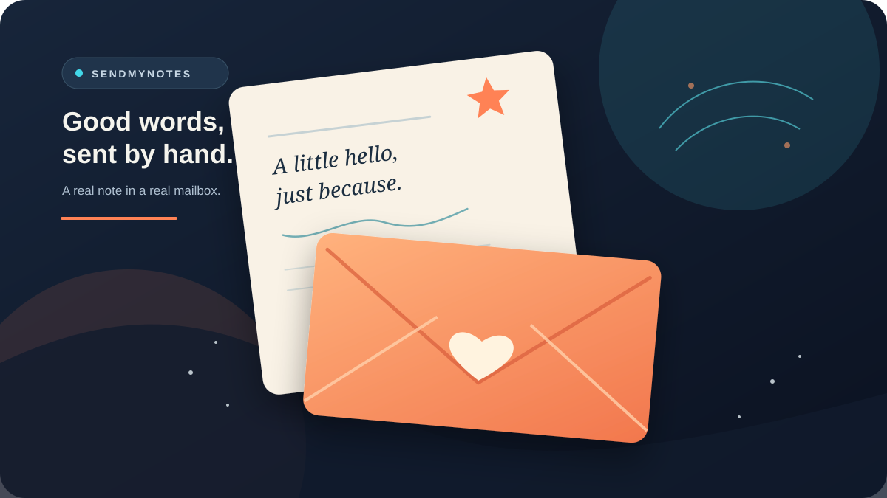
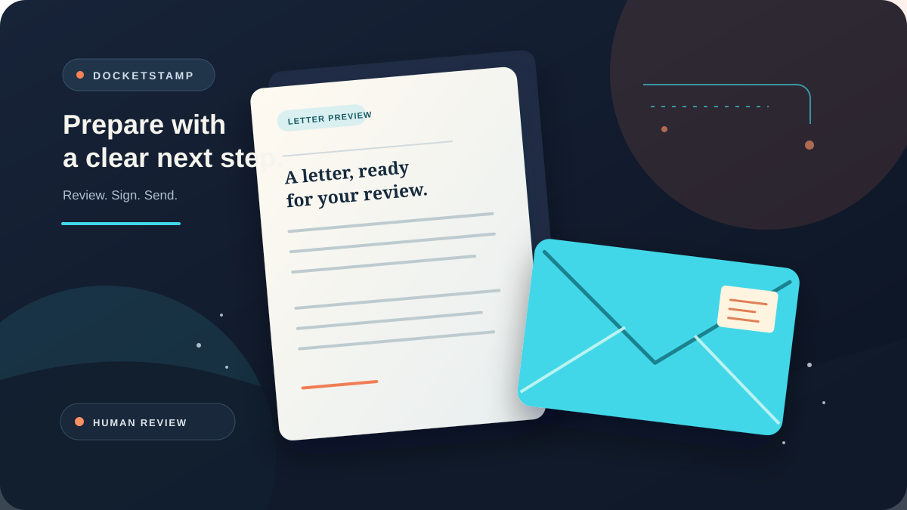
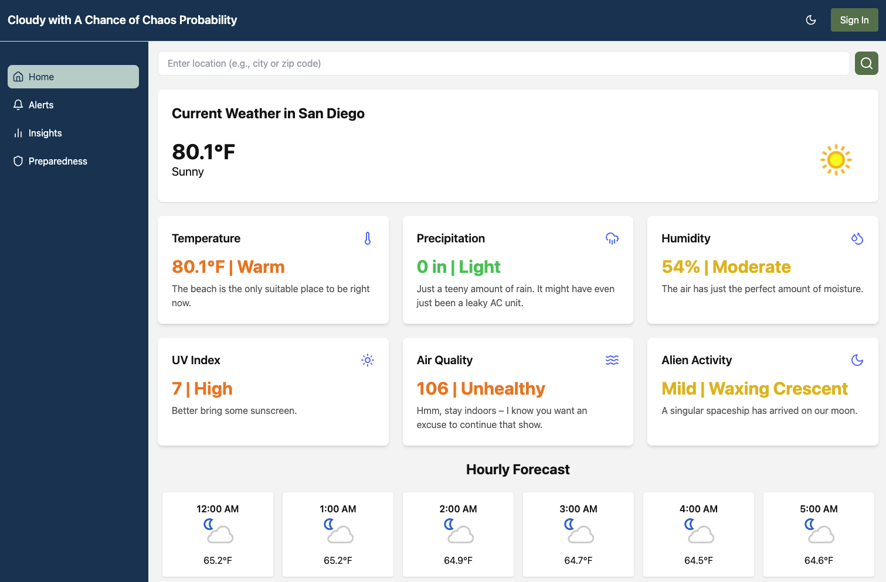
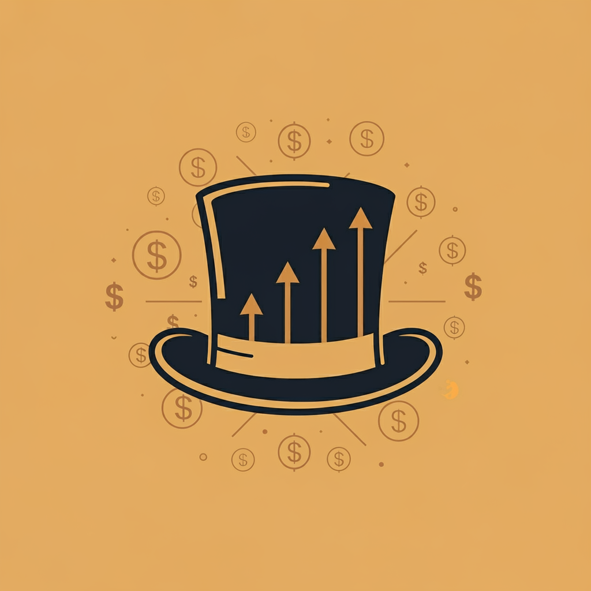
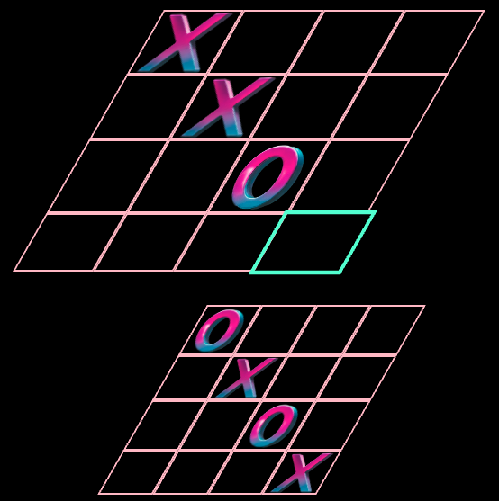

Enterprise product · Financial data foundation
Financial data, ready for reporting
I owned product direction for FDM, ABC Fitness’s financial reporting foundation built on curated Commerce data and a standardized report experience.
Product, Data & AI Leadership
I lead product work across data, AI and customer experience—from strategy to delivery.
I lead product teams through complex data and emerging technology, turning business priorities into clear customer experiences. At ABC Fitness, I owned the product initiative behind Financial Data Mart. In my own ventures, I take ideas through software, customer experience and real-world operations.
Explore my workLeadership in practice
Financial Data Mart is a flagship achievement from my ABC Fitness tenure. I owned the product direction and led the initiative that connected curated financial data to a consistent, customer-facing reporting experience.
Enterprise product · Financial data foundation
I owned product direction for FDM, ABC Fitness’s financial reporting foundation built on curated Commerce data and a standardized report experience.
Selected ventures
I build across the whole journey: product direction, customer experience, software and the operational handoffs that make it real. SendMyNotes and DocketStamp are two distinct examples.

Live product · Paid-channel experiment
A custom greeting card with a personal message written by a real pen and mailed to its recipient. SendMyNotes makes the sender journey simple while keeping the gesture personal.

Product leadership · Production software delivery
A guided self-help letter product combining deterministic templates, document preview, human review and a clear mailing handoff.
How I build
I use agents to accelerate focused research, implementation and critique. I set product intent and quality bars, define how parallel work connects, integrate the changes and own the release decision.
I design AI-assisted delivery for work that can be parallelized, with human judgment over product intent, quality standards and release. In DocketStamp, agents help me build and test the software; customer-facing letters remain deterministic, and the person sending one reviews and signs it.
A few side quests
I make room for curiosity. This collection runs from early product concepts to small browser games—some serious, some ridiculous, all made because the idea was too fun to leave alone.

Hackathon concept · Fictional mock data
A local disaster-preparedness concept using location-aware information to explore geological emergencies. The screenshot uses fictional sample data, including its deliberately silly Alien Activity panel.

Personal prototype
A planning prototype for exploring how income, savings and return assumptions affect long-term cash flow.

Browser game
A browser-based experiment in three-dimensional tic-tac-toe. Bonus points if you and a friend manage a tie.
Get in touch